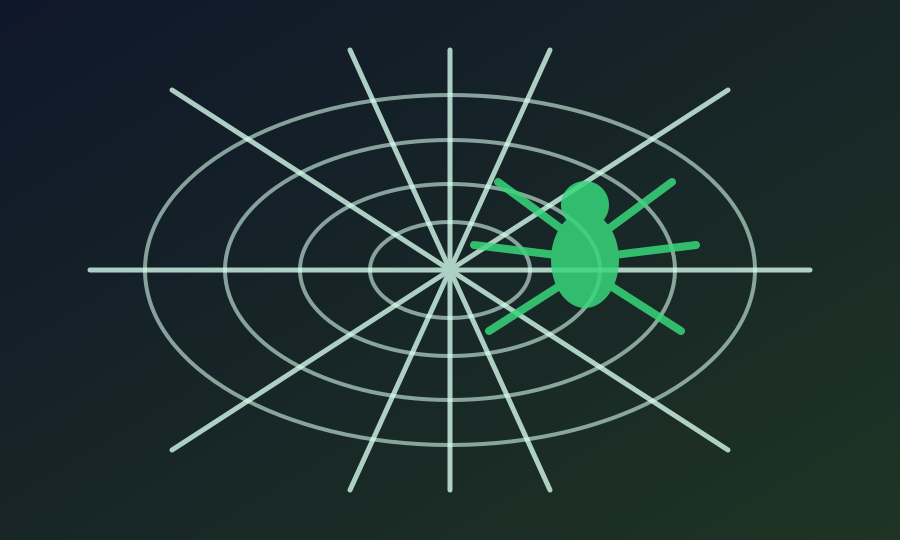

Zbulimi mbi dominimin e gjinisë femërore tek merimangat dhe ndërtimin e rrjetës gjen tregon një precizion gjuhësor mahnitës në tekstin Kuranor.
Thelb: Kurani i referohet merimangës që ndërton shtëpinë e saj duke përdorur folje në gjininë femërore. Sot biologjia ka vërtetuar se janë vetëm merimangat femra ato që ndërtojnë rrjeta. Meshkujt nuk ndërtojnë kurrë rrjetë, por gjuajnë ose parazitojnë.

Sekretet e "Shtëpisë" së Merimangës
Në botën e kafshëve, zakonisht si meshkujt ashtu edhe femrat marrin pjesë në ndërtimin e folesë (si te zogjtë) ose rolet janë të paqarta për syrin e vëzhguesit. Për mijëra vite, njerëzit shihnin merimanga duke endur rrjeta nëpër këndet e shtëpive apo pemëve, por askush nuk bënte dallimin gjinor të tyre.
Studimet e thelluara zoologjike dhe entomologjike zbuluan se ndërtimi i rrjetës (shtëpisë) së merimangës është një aktivitet ekskluzivisht femëror. Janë vetëm femrat ato që kanë gjëndrat e mëndafshit aq të zhvilluara sa për të endur shtëpinë-rrjetë. Merimangat meshkuj zakonisht janë shumë më të vegjël, nuk endin rrjeta, enden rreth e rrotull për të gjetur një partnere, dhe madje ndonjëherë përfundojnë si ushqim i vetë femrës pas çiftëzimit.
Precizioni Gjuhësor në Kuran
Në Kuran ekziston një kapitull i tërë i quajtur "Merimanga" (Surah Al-Ankabut). Ajeti i 41-të u jep njerëzve një shembull mbi ata që kërkojnë mbrojtës të tjerë veç Zotit, duke thënë se shembulli i tyre është si merimanga që ndërton shtëpi.
Mrekullia këtu nuk është te vetë parabola, por tek gjuha e përdorur. Në arabisht, folja "ndërton/merr" ka formë të ndryshme për gjininë mashkullore (ittakhatha) dhe për atë femërore (ittakhathat). Kurani përdor fjalën "Ittakhathat", e cila është një folje rreptësisht në gjininë femërore, duke përkthyer fjalë për fjalë: "...si shembulli i merimangës (femër) e cila (ajo) ndërtoi/mori për vete një shtëpi."
Lidhja e Fesë me Shkencën
Në kohën e shpalljes, asnjë shkencëtar apo bari beduin nuk i dallonte gjinitë e merimangave pa mikroskop apo studim afatgjatë të sjelljes. Zgjedhja thellësisht e saktë gramatikore (një germë e vetme 't' në fund të foljes) thekson se fakti shkencor—që është vetëm nëna merimangë ajo që ndërton rrjetën—i ishte diktuar Profetit nga Krijuesi i asaj merimange.
Ajetet Kuranore
Kuran 29:41
مَثَلُ ٱلَّذِينَ ٱتَّخَذُوا۟ مِن دُونِ ٱللَّهِ أَوْلِيَآءَ كَمَثَلِ ٱلْعَنكَبُوتِ ٱتَّخَذَتْ بَيْتًا ۖ وَإِنَّ أَوْهَنَ ٱلْبُيُوتِ لَبَيْتُ ٱلْعَنكَبُوتِ ۖ لَوْ كَانُوا۟ يَعْلَمُونَ
Shembulli i atyre që marrin mbrojtës të tjerë në vend të Allahut, është si shembulli i merimangës (femër) e cila e bën (ndërton) shtëpinë e saj. Dhe me të vërtetë, shtëpia më e dobët është shtëpia e merimangës, sikur ta dinin ata.